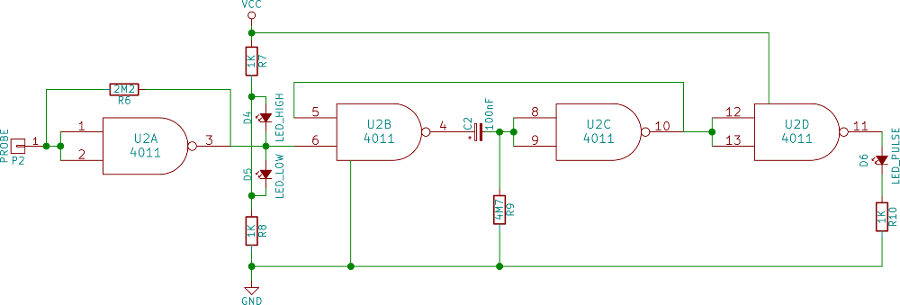

2015-09-29 - Nº 22
Editorial
Aqui está a Newsletter Nº 22 no seu formato habitual.
Esta Newsletter encontra-se mais uma vez disponível no sistema documenta do altLab. Todas as Newsletters encontram-se indexadas no link.
Esta Newsletter tem os seguintes tópicos:
Esta semana a NASA anunciou que existe água em estado líquido em Marte. Uma grande novidade que irá com certeza facilitar as missões que serão planeadas para lá. Um médico recorrendo a um dispositivo improvisado salvou criança de 2 anos que estava num voo transatlântico e que tinha tido um ataque de asma. Nesta Newsletter iremos apresentar um projeto de maker que é uma estação meteorológica construída com um Raspberry Pi. Iremos construir um circuito que é uma sonda lógica.
 João Alves ([email protected])
João Alves ([email protected])
O conteúdo da Newsletter encontra-se sob a licença  Creative Commons Attribution-NonCommercial-ShareAlike 4.0 International License.
Creative Commons Attribution-NonCommercial-ShareAlike 4.0 International License.
Novidades da Semana ^
NASA Confirms Evidence That Liquid Water Flows on Today's Mars
"New findings from NASA's Mars Reconnaissance Orbiter (MRO) provide the strongest evidence yet that liquid water flows intermittently on present-day Mars. Using an imaging spectrometer on MRO, researchers detected signatures of hydrated minerals on slopes where mysterious streaks are seen on the Red Planet. These darkish streaks appear to ebb and flow over time. They darken and appear to flow down steep slopes during warm seasons, and then fade in cooler seasons. They appear in several locations on Mars when temperatures are above minus 10 degrees Fahrenheit (minus 23 Celsius), and disappear at colder times."
Outras fontes: The Guardian, Wired, CNN, BBC, Gizmodo, ars technica.
THE MAGPI ISSUE 38 - OCTOBER 2015
"Featured in The MagPi Issue 38: Build a Raspberry Pi robot for £50 / $75; Build a web-powered plant waterer; Make music with the Piano HAT; Raspberry Pi Touchscreen Display reviewed; Spooky Halloween projects; And much, much more!"
-

"When Dr Khurshid Guru heard there was a child suffering an asthma attack aboard his transatlantic flight last week, the quick-thinking physician came to the rescue armed only with a plastic water bottle, a cup, some tape and an oxygen tank. As director of robotic surgery at the Roswell Park Cancer Institute in upstate New York, Dr Guru is no stranger to innovative gadgets, but he usually does not work with young patients. But when faced with an emergency tens of thousands of feet in the air aboard an Air Canada flight from Spain to the US, Dr Guru saved the day, earning himself comparisons to MacGyver - a fictional character from the eponymous 90s TV show best known for his incredible resourcefulness."
Ciência e Tecnologia ^
Subwavelength total acoustic absorption with degenerate resonators
"We report the experimental realization of perfect sound absorption by sub-wavelength monopole and dipole resonators that exhibit degenerate resonant frequencies. This is achieved through the destructive interference of two resonators' transmission responses, while the matching of their averaged impedances to that of air implies no backscattering, thereby leading to total absorption. Two examples, both using decorated membrane resonators (DMRs) as the basic units, are presented. The first is a flat panel comprising a DMR and a pair of coupled DMRs, while the second one is a ventilated short tube containing a DMR in conjunction with a sidewall DMR backed by a cavity. In both examples, near perfect absorption, up to 99.7%, has been observed with the airborne wavelength up to 1.2m, which is at least an order of magnitude larger than the composite absorber. Excellent agreement between theory and experiment is obtained."
understanding Philae’s wake-up: behind the scenes with the Philae team
"Since Rosetta’s lander Philae first woke up from hibernation and called ‘home’ on 13 June, the teams at the Lander Control Center (LCC – DLR), the Science Operations and Navigation Center (SONC – CNES), the Max-Planck Institute (MPS – Göttingen) and the Institute for Particle and Nuclear Physics (Wigner Research Centre for Physics – Budapest) have been working with ESA’s Rosetta Mission Operations Centre (RMOC – ESOC) and the Rosetta Science Ground Segment (RSGS – ESAC), and in close cooperation with the Philae and Rosetta scientists, to establish regular and predictable contacts with Philae, and to resume scientific measurements."
Japanese paper art inspires new 3-D fabrication method that goes beyond 3-D printing limitations
"A research team has created complex 3-D micro- and nanostructures out of silicon and other materials used in advanced technologies by employing a new assembly method that uses a Japanese Kirigami paper-cutting method. The method builds on the team’s “pop-up” fabrication technique — going from a 2-D material to 3-D in an instant, like a pop-up children’s book — reported in January this year on KurzweilAI and in the journal Science. Those earlier ribbon-like structures yielded open networks, with limited ability to achieve closed-form shapes or to support more complex spatially extended devices."
Modelos 3D ^
Com a disponibilidade de ferramentas que permitem dar azo a nossa imaginação na criação de peças 3D e espaços como o thingiverse para as publicar, esta rubrica apresenta alguns modelos selecionados que poderão ser úteis.
Customizable Container with Knurled Lid (http://www.thingiverse.com/thing:612709)
Containers are so useful - I got a lot of them. Here is my container with a knurled lid and cylindrical jar.
Use the Customizer to create a proper container for your needs, it is fully parameterized.
The User jonaslorander implemented a new option to divide the jar into compartments. Many thanks to him for providing the code and making it! I like it very much!
See also my new Lofty Container and EPCOT Spaceship Earth style Container!
Platform Jack [Fully Assembled, No Supports] (http://www.thingiverse.com/thing:925556)
This functional platform jack prints fully assembled without supports.
UPDATE [7/21/2015]: We have uploaded an updated platform jack with stronger scissor arms, improved axles to stop the arms from separating, and a larger gap between the screw and crossbeam to fix the fusing issue. We printed the updated version with a 0.3mm layer height and 15% infill in 4 hours.
UPDATE [7/22/2015]: For anyone having problems with the scissor arms fusing together we have uploaded a modified file with the tolerance increased from 0.5 to 0.65 mm (The axle tolerance is unchanged).
Sundial (http://www.thingiverse.com/thing:982884)
Large, garden variety sundial. To use, align it towards true north and hope for clear skies (for instructions on finding true north, see: http://www.princeton.edu/~oa/manual/mapcompass2.shtml).
Inspired by/remixed from this great Instructables project: http://www.instructables.com/id/Sundial-Watch-3D-Printing/step6/The-Classic/
More info on sundials: https://en.wikipedia.org/wiki/Sundial
Circuitos ^
Aqui é apresentado um circuito simples que poderá ser construído com componentes.
Sonda Lógica
Hoje vamos construir dois circuitos que funcionam como sondas lógicas que nos informam do estado do sinal em análise através de LEDs.
Um circuito usa o IC CD4001 e o outro usa o IC CD4011, o primeiro implementa 4 Portas NOR com Buffer e o segundo implementa 4 Portas NAND com buffer. Usando uma sonda (que se encontra ligada ao pino 1 dos ICs) podemos verificar se o circuito que estamos a ver se encontra em estado LOW ou HIGH, ou se se encontra a variar.
Para se usar esta sonda num circuito deverá ligar-se o VCC e o GND do circuito à Sonda. Seguidamente pode-se usar o pino designado por "probe" para analisar o circuito que se pretende testar. Os LEDs irão piscar de acordo com o estado do circuito - Vermelho em estado HIGH, verde em estado LOW e Amarelo quando o circuito está a "pulsar".
Esquemático

Componentes (BOM):
Circuito 1:
- 1x IC CD4001 (U1)
- 1x Condensador Cerâmico de 100nF (C1)
- 3x Resistências de 1K Ohms (R1, R3 e R5)
- 1x Resistência de 2.2M Ohms (R4)
- 1x Resistência de 4.7M Ohms (R2)
- 1x LED vermelho de 5mm
- 1x LED verde de 5mm
- 1x LED amarelo de 5mm
Circuito 2:
- 1x IC CD4011 (U2)
- 1x Condensador Cerâmico de 100nF (C2)
- 3x Resistências de 1K Ohms (R7, R8, R10)
- 1x Resistência de 2.2M Ohms (R6)
- 1x Resistência de 4.7M Ohms (R9)
- 1x LED vermelho de 5mm
- 1x LED verde de 5mm
- 1x LED azul de 5mm
Pin-out dos IC/Componentes
Links úteis:
Artigo do Maker ^
Projeto interessante publicado por um maker.
Make a Weather Station With a Raspberry Pi 2
O projecto de maker da semana foi feito pelo Jeremy Morgan e encontra-se publicado no seu site.
Trata-se de uma estação meteorológica baseada no Raspberry Pi.
Introdução
A parte central do movimento "Internet das Coisas" é a ideia de dispositivos que recolhem dados e envia-os para a Internet. Esses dados são então guardados para observação futura. É um conceito simples e já existe à algum tempo, mas ultimamente foi ficando mais barato e mais fácil de fazer. Este projeto é um grande exemplo disso.
Embora pareça longo, este tutorial deve demorar cerca de 30 minutos a concluir.
Depois de finalizar este guia, o Raspberry Pi vai medir:
- Temperatura
- Humidade
- Pressão atmosférica
- Luz
É possível enviar resultados para:
- Google Spreadsheet na Google Drive
- ASP.Net Web API num website
O que é necessário
Para este projeto vai ser necessário:
- Raspberry Pi 2 ou Modelo B
- Sensor de Temperatura e Humidade AM2302
- Sensor de pressão Barométrica e de Temperatura BMP180
- Sensor de Temperatura à prova de agua DS18B20
- Sensor de Luminosidade Digital TSL2561
Opcional:
- Breadboard e fios
Ligações
As ligações necessários estão na imagem seguinte:
Enquanto isto pode parecer confuso no início, é uma configuração bastante simples para cada sensor. Aqui estão algumas informações adicionais sobre como conectar-se cada um se o diagrama não for útil.
Instalando o Software
Este tutorial foi testado com uma nova instalação do Raspian. As instruções devem ser bastante parecidas também para outras distribuições Linux.
Ligue-se ao Pi por SSH (ou abra uma janela de comando) e mude para a "home" , criando uma pasta para as fontes ("sources").
cd ~
mkdir sources
cd source
Agora podemos começar a instalação de sensores.
Preparação do AM2302
O AM2302 é um sensor de temperatura e humidade. É um sensor DHT22 que está ligado com uma resistência pullup e uma carcaça. É mais fácil de usar que o kit DHT22.
Para este sensor iremos usando a biblioteca da Adafruit Python DHT:
git clone https://github.com/adafruit/Adafruit_Python_DHT.git
cd Adafruit_Python_DHT
sudo apt-get update
sudo apt-get install build-essential python-dev python-openssl
sudo python setup.py install
Isto irá instalar o software necessário para interagir com o AM2302.
Testar o AM2302
Há um script de teste que pode usar para verificar o sensor está a funcionar. Corra o AdafruitDHT.py com "2302" que é o sensor, e "22" que é o pino que se está a usar. Mude-o se o ligou a um pino diferente.
cd examples
sudo ./AdafruitDHT.py 2302 22
Você deve ver algo parecido com isto:
DSB18B20
O DSB18B20 é um termómetro digital de um fio (protocolo Dallas de um fio). Se o comprar "com extras" vem com um cabo e invólucro impermeável que é o que foi usado.
Vai ser necessário adicionar suporta para o protocolo de um fio. Abra o boot config do Raspberry:
sudo nano /boot/config.txt
Adicione o seguinte texto no ficheiro: dtoverlay=w1-gpio
Grave o ficheiro e reinicio o Raspberry:
sudo reboot
Testando o DSB18B20
Para testá-lo será necessário carregar os seguintes módulos no kernel:
sudo modprobe w1-gpio
sudo modprobe w1-therm
Nota: Pode fazer o seguinte para adicioná-los ao kernel no boot:
sudo nano /etc/modules
adicione as seguintes linhas:
w1-gpio
w1-therm
Grave o ficheiro e, da próxima vez que o Raspberry iniciar eles serão carregados automaticamente.
Para verificar o dispositivo:
cd /sys/bus/w1/devices
ls -la
Irá ver uma pasta a começar por 28- este é o seu dispositivo com base no número de série.
cd 28-xxxx (mude o xxxx para o que lhe aparecer)
cat w1_slave
Deverá ver algo como o seguinte:
Se disser "YES" está a funcionar. Se não, verifique as ligações.
Configurar o I2C
De seguida, sera necessário configurar I2C no sistema:
sudo apt-get install python-smbus
sudo apt-get install i2c-tools
Pode receber mensagens "já instalados", dependendo de como o sistema está configurado.
Adicione os módulos para seu kernel na inicialização. Abra o ficheiro /etc/modules:
sudo nano /etc/modules
adicione as seguintes linhas:
i2c-bcm2708
i2c-dev
Abra o boot config do Raspberry:
sudo nano /boot/config.txt
Adicione o seguinte:
dtparam=i2c1=on
dtparam=i2c_arm=on
Grave o ficheiro e reinicio o Raspberry:
sudo reboot
Testes I2C
Pode ver quais dispositivos estão ligados ao barramento I2C, executando o seguinte comando:
sudo i2cdetect -y 1
Deverá ver algum como o seguinte:
Está tudo ok!
Sensor TSL2561
O TSL2561 é um Sensor de Luminosidade, mede a quantidade de luz que detecta, útil para ver como brilhante o céu está no dia.
É preciso alguns ficheiros fonte adicionais:
cd ~/sources
wget https://raw.githubusercontent.com/adafruit/Adafruit-Raspberry-Pi-Python-Code/master/Adafruit_I2C/Adafruit_I2C.py
wget https://raw.githubusercontent.com/seanbechhofer/raspberrypi/master/python/TSL2561.py
Testando o TSL2561
Para testar o sensor, executar os seguintes comandos:
sudo python Adafruit_I2C.py
sudo python TSL2561.py
Deverá ver algo parecido com isto:
Está ok!
BMP180
O BMP180 é um sensor de pressão barométrica com um termómetro. Mais uma vez se irá usar algumas bibliotecas Adafruit:
git clone https://github.com/adafruit/Adafruit_Python_BMP.git
cd Adafruit_Python_BMP
sudo python setup.py install
Testando o BMP180
Para testá-lo:
cd examples
sudo python simpletest.py
Deve responder como este:
Obter dados de todos os sensores
Aqui vamos obter os dados de todos os sensores usando uma aplicação escrita para o efeito. Esta aplicação vai obter todas as informações e mostrá-las na consola, ou enviá-las para a Internet.
cd ~
git clone https://github.com/JeremyMorgan/Raspberry_Pi_Weather_Station.git reader
Isto irá copiar os scripts em uma pasta chamada "reader". Para testá-los, digite:
sudo python readings.py dryrun
Isto faz um “dry run” que não envia dados para lado nenhum, mas mostra-os no ecran:
Está quase pronto! Se o executar sem o parâmetro "dryrun" a aplicação vai construir um objeto JSON e tentar envia-lo para um endpoint web, que se vai ver como criar mais tarde no tutorial.
Opcional: Google Spreadsheets
Pode colocar os dados numa sheet do Google usando a aplicação. Vai precisar de configuração OAuth com o Google, e criar um ficheiro JSON. As instruções estão aqui:
http://gspread.readthedocs.org/en/latest/oauth2.html
Vai querer armazenar o ficheiro JSON gerado no diretório "/home/pi/reader/".
Uma coisa que é necessário é abrir o ficheiro JSON OAuth e procurar por "client_email". Deve ser parecido com isto:
"client_email": "[email protected]",
Depois de criar sua sheet, é preciso adicionar o endereço de email como alguém que pode aceder a sheet nas configurações de partilha:
De seguida, abra o seguinte script na pasta:
sudo nano google.py
Substitua o valor do GDOCS_OOAUTH_JSON pelo nome do ficheiro JSON que descarregou. Mude o GDOCS_SPREADSHEET_NAME para o nome da sheet que criou. Grave o ficheiro.
Execute:
sudo python google.py
Se toda a informação estiver correta, ele vai começar a executar e adicionar linhas à sua sheet a cada 30 segundos:
Parabéns! Agora pode enviar seus dados para uma sheet do Google. Pode-se executar este comando como um serviço se quiser e armazenar todos os dados no Google Drive.
Enviá-lo para a nuvem
Uma coisa que foi feita com a configuração foi criar um site Microsoft Azure para atuar como um endpoint para a configuração. Pode-se executar isto em qualquer site ASP.Net com um host que suporte Web API, como Arvixe.
Configuração da API
Você pode clonar o seguinte repositório e abri-lo no Visual Studio (Deve funcionar em 2012 ou mais recente)
https://github.com/JeremyMorgan/Raspberry_Pi_Weather_Station_API.git
Você precisará criar uma base de dados, o script de criação está na pasta "Install SQL". De seguida, configure esses valores no web.config e defina a pasta como uma aplicação e inicie-o!
Neste ponto, vai necessitar de abrir o ficheiro readings.py e mudar o campo "URL" na parte inferior do seu endpoint, por exemplo:
url = "http://mysite.com/api/readings
Verifico que é realmente mais fácil simplesmente criar um site em Microsoft Azure para isso, e tem 5 sites gratuitos, então por que não? pode SEMPRE apontá-lo para um servidor SQL diferente que escolha.
Configuração da interface do utilizador na Web
Foi construída uma pequena UI para isso que usa Angular JS e mais alguns plugins para criar uma visualização agradável:
Se quiser executar isto, pode descarregá-lo do Github e executá-lo em qualquer site que suporte HTML.
https://github.com/JeremyMorgan/Raspberry_Pi_Weather_Station
Certifique-se e alterar as configurações em "home.services.js" para refletir o seu site:
Resumo
Colectar dados é uma das partes interessante da Internet das Coisas, mas o que vai fazer com eles? As possibilidades são infinitas. Poderia colocar isso em casa para fazer ajustes ao termostato, ou colocá-lo em uma área de armazenamento para certificar-se de algo valioso está seguro. Espero que este projeto inspirá-lo a construir mais coisas.
Outros artigos/projetos interessantes de ler:
- OscilloPhone: Use your Smartphone as an Oscilloscope / Signal Generator
- Updating firmware on USBASP bought from eBay
- Using an Arduino to Automatically Turn On the Sound Bar with the TV
Compras ^
Artigos do ebay ou de outras lojas online que poderão ser úteis em projetos. A informação aqui presente apenas serve para ajudar na aquisição dos componentes. O altLab não tem qualquer intervenção/participação em qualquer negócio aqui apresentado.
AM2320 Digital Temperature Humidity Sensor Replace AM2302 SHT10 for Arduino
(http://www.ebay.co.uk/itm/221856512708) - US $2.63
Product Description
(1): AM2320 digital temperature and humidity sensor is a calibrated digital signal output containing hexyl temperature and humidity sensor complex. Temperature and humidity using a dedicated capture technology to ensure that products with high reliability and excellent long-term stability. Sensor includes a capacitive humidity sensing element and an integrated high-precision temperature measurement devices, and connected with a high-performance microprocessors. The product has excellent quality, fast response, anti-interference ability, high cost and other advantages.
(2): AM2320 communication using a single bus, standard I2C two means of communication. Standard single-bus interface, allowing system integrators to become simpler and quicker. Ultra-small size, low power consumption, signal transmission distance up to 20 meters or more, making it the best choice for all kinds of applications and even the most demanding applications. I2C communication using standard communication sequence, the user can directly linked to the I2C communication bus without additional wiring, simple to use. Two means of communication are used as humidity, temperature and check CRC and other digital information directly via temperature compensated output, users do not need to calculate the secondary digital output, and no need for temperature compensation of the humidity, you can get an accurate temperature and humidity information.
(3): two means of communication are free to switch, the user can freely choose, easy to use, it should be broad areas. Products for 4-wire, easy connection, special packages according to user needs and availability.
2: Product Features:
- Ultra-small size;
- super cost-effective;
- ultra-low voltage operation;
- Excellent long-term stability;
- Standard I2C and single-bus output.
3: Applications:
(1): HVAC, dehumidifiers, testing and inspection equipment, consumer goods, automotive, automation, data loggers, weather stations, home appliances, humidity control, medical, and other relevant humidity measurement and control.
4: Measuring range: Temperature: -40 ~ + 80 ºC Humidity: 0 ~ 99.9% RH
5: Accuracy (at 25 ºC environment):
6: Temperature: ± 0.5 ºC Humidity: ± 3% RH (10 ... 90% RH)
7: Resolution: Temperature: 0.1 ºC Humidity: 0.1% RH
Package included:
- 1PCS x AM2320 Digital Temperature Humidity Sensor Replace AM2302 SHT10 for Arduino
3.3V 3.5V BMP180 Digital Barometric Pressure Sensor Module Replace BMP085
(http://www.ebay.co.uk/itm/221488422266) - US $1.54
Description
BMP180 is a high precision, small volume, low energy consumption pressure sensor, can be applied in mobile devices . Its performance is remarkable, the absolute minimum accuracy can reach 0.03 hPa, and power consumption is extremely low, only 3 uA. BMP180 adopted powerful 5 - pin bearing (LCC) ceramic leadless chip ultra-thin encapsulation, can be directly through the I2C bus connected to a variety of microprocessors. the new product is compatible with 3.3V and 5V
Main features:
- Pressure range: 300 ~ 1100 hPa (altitude 9000 m ~ - 500 m)
- compatible with 3.3V and 5V
- LCC8 encapsulation: lead-free ceramics carrier encapsulation (LCC)
- Low power consumption: 5 uA, in the standard model
- High precision: low power consumption mode,the resolution is 0.06 hPa (0.5 meters) ; High linear mode, the resolution is 0.03 hPa (0.25 meters)
- MSL 1 response time: 7.5 ms
- Standby current: 0.1 uA
Typical application: - GPS precise navigation (navigation calculation, up and down the bridge detection, etc ) - Indoor and outdoor navigation - Leisure,sports and health monitoring - Size: 15mm * 13mm
Packing List:
- 1Pcs BMP180 Digital Barometric Pressure Sensor Board Module
TSL2561 Luminosity Sensor Breakout infrared Light Sensor integrating sensor
(http://www.ebay.co.uk/itm/201414898036) - US $2.25
Product Description
- 100% New brand and high quality
- The TSL2561 Luminosity Sensor Breakout is a sophisticated light sensor which has a flat response across most of the visible spectrum. Unlike simpler sensors, the TSL2561 measures both infrared and visible light to better approximate the response of the human eye. And because the TSL2561 is an integrating sensor (it soaks up light for a predetermined amount of time), it is capable of measuring both small and large amounts of light by changing the integration time.
- The TSL2561 is capable of direct I2C communication and is able to conduct specific light ranges from 0.1 - 40k+ Lux easily. Additionally, the TSL12561 contains two integrating analog-to-digital converters (ADC) that integrate currens from two photodiodes, simultaneously. Each breakout requires a supply voltage of 3V and a low supply current max of 0.6mA.
- Board Size: 1.7x1.3cm(approx)
1x Waterproof Digital Thermal Probe or Sensor DS18B20 Length 1M
(http://www.ebay.co.uk/itm/271827869264) - US $1.65
Description
- 100% Brand New
- Brand New High Quality
- The probe the temperature sensor DS18B20 original chip
- High quality stainless steel tube encapsulation waterproof moistureproof prevent rust
- Stainless steel shell 6*50m
- Power supply range: 3.0V to 5.5V
- Operating temperature range: -55°C to +125°C (-67°F to +257°F)
- Storage temperature range: -55°C to +125°C (-67°F to +257°F)
- Accuracy over the range of -10°C to +85°C: ±0.5°C.
- No other components, unique single bus interface
- Output lead: red (VCC), yellow(DATA) , black(GND)
- Cable length: 1M
That's all Folks!